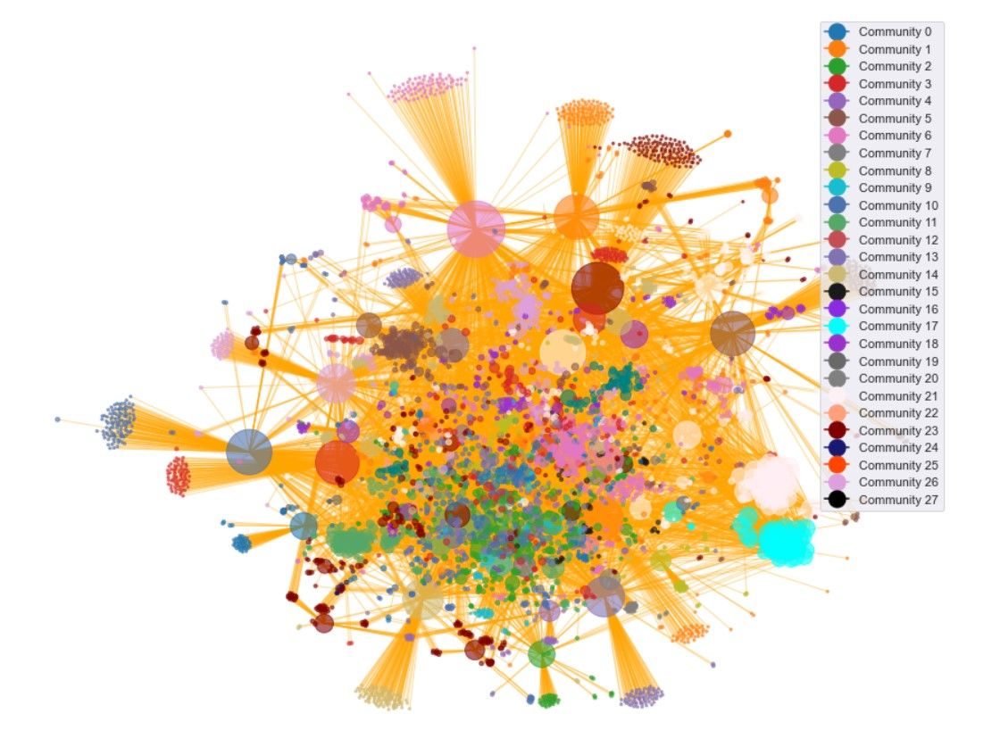

The Olympic Games 2016's countries, sports and athletes are connected across the board.
This can be seen by all the orange links between the red, green, and blue nodes on the above network.
The size of each node is explaining how many links each node has, and the colors
tell whether the node is a country, a sport, or an athlete at the Olympics in Rio 2016.
By looking at the network, we can see that the countries, in general, have the most links.
This make sense, due to the fact that each countrys' Wikipedia page link to all the
athletes representing their nation. Furthermore each sport are also listing all the athletes
in that speecific sport competing at he Olympics in Rio.
The Olympic graph inlightens a clear national tendency, where big red nodes all link to the green athlete nodes of their country.
Furthermore, there are some groups of nodes, that are more connected than others. As an
example, the green, very big and dense looking
clusters in the right bottom side of the network. Both clusters look like they are linking to the same
sport (the blue node to the right of them).
In network science, a group of nodes that have a higher likelyhood of connecting
to each other than to other groups of nodes are called a community. Interested in this theory? Try look at
[Network Science book, Chapter 9].
Just by looking at the above Olympic Network, we can see that some of the nodes probably have a higher chance of linking to each other than to other nodes.
Let's investigate the Olympics community structure:

The above graph shows the Olympic network, now where a community algorithm is run on the data.
Now each node belongs to a community which is visualized by specific community colors.
The Network is still super complex, but some tendency becomes visible. As discovered earlier, the two very dense clusters
do have more likelihood of connecting inside the cluster than to anyone ells, which is why they have become respectively community
17 and 21. Furthermore, the graph shows that the athletes from the same country are most likely to be in a community together.
It is still difficult to interpret much from this visualization. Let's continue the investigation by detecting the sizes of the communities:
The number of athletes, countries and sports (nodes) are counted for each of the 28 communities and plottet below.
The x-axis the communities where the y-axis shows the community size. Be aware that the x-axis does not correspond to the real community number, since the plot is sorted
showing the largest community as community 0.
Looking at the plot, the size of each community is very different.
Looking at the size of the largest community, it contain more than 500 nodes. Comparing this to community 25, the size is below around 20.
How come the size of the communities be so different you might ask.
Let's try and find out!
What is each community about?
We would like to get to know each community better. However, besides looking at their connections with each other and the size of them, what can we do?
We have visited every single nodes' Wikipedia page, to read and understand more about the communities.
Then, an algorithm, called TF-IDF (Term frequency–Inverse document frequency) is used to find the important words in each community. You can read more about this
[here].
.
The main important words from each community are plotted in the following word clouds. Try and see if you can explain anything about the different communities, by looking at these word clouds.
Cool right?
What have you discovered?
To be honest, the themes of the communities did not become very clear from these word clouds. The algorithm did not work as well as we
wished. It turns out, that it is difficult to identify the important words when you mix the type of content in the Wikipedia pages.
However, we get the feeling, that the communities are based upon the athletes' nationality and or the sport that they have in common.
As an example, we can see that community XXXX is filled with words about swimming.
OK. Maybe we should try and investigate the athletes' network as a sub-network to the big Olympic Network? This might reveal more information when looking at the Wikipedia pages.